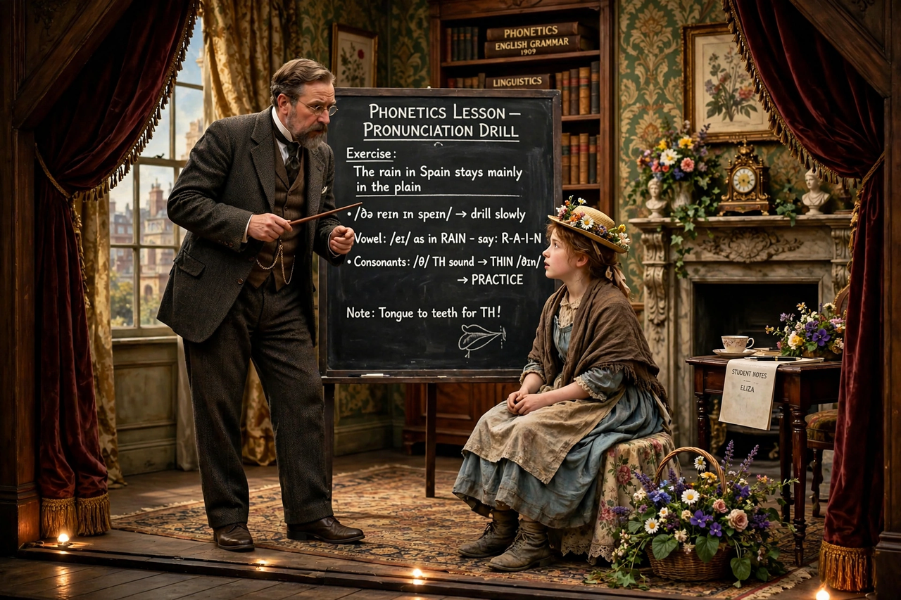

Wikipedia — The Free Encyclopedia

Pygmalion is a play by the Irish playwright George Bernard Shaw, named after the Greek mythological figure. It was first presented on stage in Vienna in 1913, in German translation, and in London in 1914. Shaw's most popular play, it tells how a professor of phonetics remakes a Cockney flower girl into a lady who can pass for a duchess, and it formed the basis of the musical My Fair Lady (1956).
Professor Henry Higgins bets his colleague Colonel Pickering that within six months he can pass the flower seller Eliza Doolittle off as a duchess simply by teaching her to speak "properly". Eliza, hungry for the respectability that would let her work in a flower shop, submits to the experiment, triumphs at an embassy ball, and then rebels: the training has changed her outwardly but left her with nowhere to belong. Shaw refused the romantic ending imposed by later adaptors; his published prose sequel insists that Eliza marries the admiring Freddy Eynsford Hill and opens her own shop, rather than returning to Higgins.
The play is a sharp comedy about class, accent and the arbitrariness of social rank in Britain, and about education as both liberation and violence. The 1938 film, co-directed by Anthony Asquith and Leslie Howard and adapted by Shaw himself, won him an Academy Award for the screenplay. Through My Fair Lady the story became one of the best-known in the world, though the musical's softened ending reverses Shaw's intent.